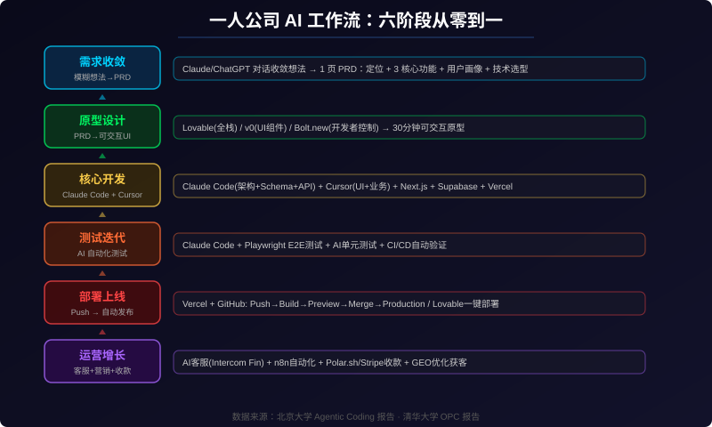
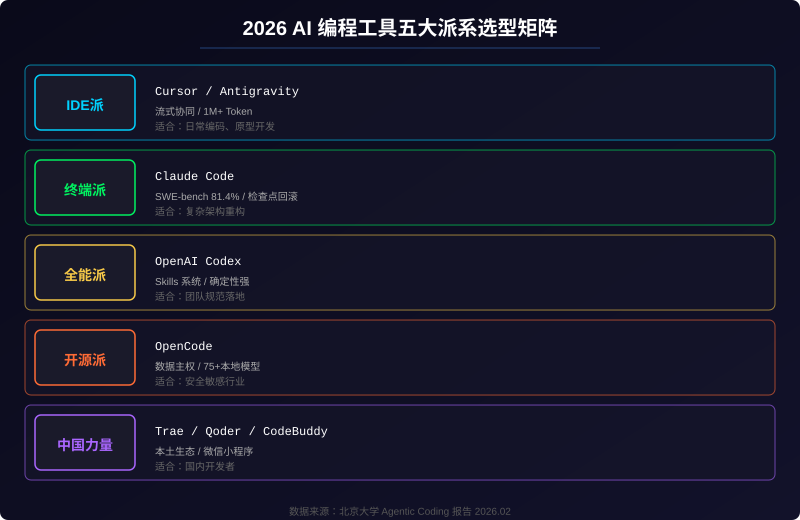
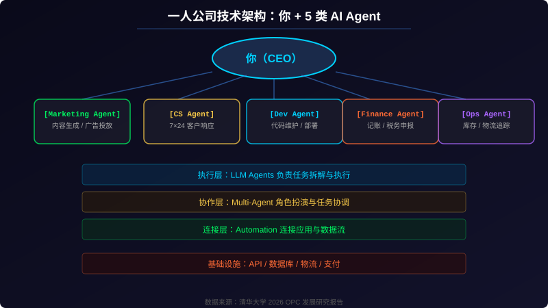
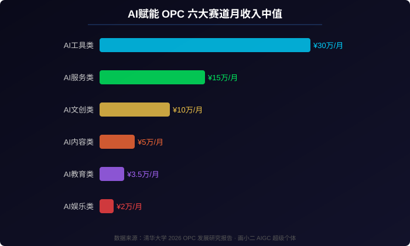
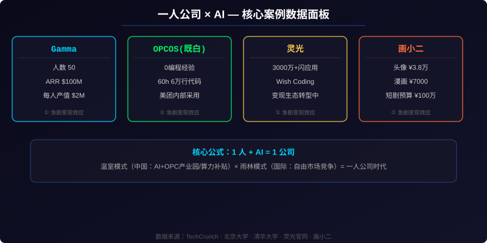

一人公司时代：2026 年用 AI 从零构建产品的完整指南 - AI知识宇宙 - 用AI采集，用AI生成
数据说明：本文综合北京大学 AI 肖睿团队《Agentic Coding：从 Vibe Coding 到超级个体的进化之路》（2026.02）、清华大学《2026 一人公司（OPC）发展研究报告》（2026.02）、混沌学园《超级个体计划》及《个人品牌》等核心报告，结合公开媒体报道整理而成。数据采集于 2026 年 5 月 25 日。
引言：一个人就是一家公司
「我一个人，一台电脑，一个账号，一个月赚了 60 万。」这不是神话，而是 2026 年正在发生的现实。
当 AI 让编程门槛归零，当算法把流量精准推给每一个有想法的人，传统的雇佣关系正在被一种全新的工作主体撕裂——超级个体，或者更正式地说，一人公司（One-Person Company, OPC）。
一组数据说明这场变革的烈度：
- Cursor 在 2026 年达到 $2B 年化收入，100 万+ 付费用户，35% 的 PR 由 AI 自动生成，67% 的世界 500 强企业在使用
- Gamma 仅用 50 人团队做到 $100M ARR，盈利 2 年+，每人年均产值 $2M
- 蚂蚁灵光上线不到一年用户创建 3000 万+ 闪应用，推出「灵光圈」实现应用版的「朋友圈」
- OPCOS（既白）：一位零编程经验的产品经理，用 Cursor + Claude Code 在 60 小时内完成 6 万行代码的系统开发
这还不是全部。清华大学《2026 一人公司发展研究报告》指出：2026 年是一人公司成为主流创业结构的元年。北京大学《Agentic Coding》报告进一步揭示：2026 年是 Agentic Coding 元年——AI 从「被动辅助」变为「主动自主执行」，开发者从「代码编写者」转变为「创意实现者」。
本文不是工具清单。它是一套从想法到上线再到运营的 6 阶段完整工作流，每个阶段都有明确的工具选择、输入输出和衔接逻辑。你可以直接拿去用。

一、需求收敛：把模糊想法变成产品定义
1.1 为什么第一步最重要
大多数独立开发者卡在同一个地方：「想法太多，流程太少。」好的产品不是从「我想做一个 XXX」开始的，而是从「我做的 XXX 解决了谁的什么问题」开始的。
你已经有了一个模糊的想法。现在需要做的不是写代码，而是通过 AI 对话一步步把它收敛成可执行的产品定义。
1.2 用 AI 做需求收敛
工具：Claude / ChatGPT 深度对话
方法：把你的原始想法用自然语言描述给 AI，然后追问以下问题：
- 一句话定义：这个产品解决什么问题？
- 核心功能：MVP 只做哪三件事？
- 用户画像：谁会为这个功能付费？
- 技术选型：前端用什么、后端用什么、数据库选什么？
- 竞争分析：已有产品在哪方面做得不够好？
输出物：1 页 PRD，包含问题定义、用户画像、功能范围、技术选型。
1.3 清华报告的核心洞察：能力液态化
清华大学报告提出了一个关键概念——能力液态化：AI 获取技能的边际成本趋近于零。一个人的短板不再致命，因为 AI 可以「取高补低」，将你的天赋与 AI 赋能层结合，填补需求与执行之间的空白。
但这也要求创始人具备两种关键能力：鉴赏力（知道什么是好的）和提问力（精准描述需求的能力）。
二、原型设计：30 分钟从 PRD 到可交互 UI
2.1 非技术创业者的最快路径：Lovable
如果你不会写代码，或者想最快速度验证想法，Lovable 是目前最好的选择。它在 2026 年估值达到 $6.6B，ARR 从 $100M 增长到 $400M+（仅用 7 个月）。
Lovable 的核心优势是全栈一体化：你描述需求，AI 生成前端（React + Tailwind）、自动配置 Supabase（数据库 + Auth + 存储）、一键部署为在线 URL。整个过程不需要你理解什么是 REST API。
定价：Pro $25/月，足以完成一个完整的 MVP。
2.2 开发者控制力优先：Bolt.new
Bolt.new 基于 StackBlitz 的 WebContainer 技术，在浏览器中运行真实的 Node.js 环境。它支持 React、Vue、Svelte、Angular 等多种框架，并且显示完整的代码文件结构——这对开发者来说意味着更高的透明度和控制力。
定价：Pro $25/月（1000 万 Tokens），免费版 100 万 Tokens/月足够做原型验证。
2.3 UI 质量优先：v0.dev
如果你已经有一个设计稿或者对 UI 质量要求极高，v0（Vercel 出品）是生成生产级 React 组件的最佳选择。它生成的代码质量在三大工具中最高，可直接纳入生产代码库。
适用场景：登录页、仪表盘、SaaS 界面，以及 Next.js 生态内的前端组件。
注意：v0 不生成后端代码，需要你有能力自己搭建 API 和数据库。
2.4 三大工具对比
| 维度 | Lovable | Bolt.new | v0.dev |
|---|---|---|---|
| 类型 | UI 优先全栈 | 全栈浏览器 IDE | UI 组件生成 |
| 适合人群 | 非技术创业者 | 开发者 | 前端开发/设计 |
| 后端支持 | Supabase 原生集成 | 框架灵活（前端为主） | 无（前端仅） |
| 部署 | 内置域名 / GitHub 同步 | Bolt Hosting / Netlify | Vercel |
| 免费额度 | 5 Credits/天 | 100 万 Tokens/月 | $5 额度/月 |
| 付费起价 | $25/月 | $25/月 | $20/月 |
| 生成速度 | ~60 秒/次 | ~30 秒/次 | 较快 |
| 代码可见性 | 仅聊天（可导出） | 完整文件编辑 | 组件级别 |
| 生产就绪度 | ~40% 可直接上线 | ~25% 可直接上线 | 组件质量高 |
2.5 实战工作流
以「一个 AI 自动生成周报的 SaaS」为例：
- 把 PRD 喂给 v0，生成定价页、登录页、仪表盘三个核心页面的 React 组件
- 在 Figma 中微调布局和设计系统
- 用 Figma MCP 把设计意图带入开发环节
三、核心开发：Claude Code + Cursor 双引擎
3.1 为什么需要两个工具
一个常见的误区是：找一个最强的 AI 编程工具就够了。但现实是，不同层级的任务需要不同工具来处理。
北京大学《Agentic Coding》报告将 2026 年的 AI 编程工具分为五大派系：

对于一人公司来说，最推荐的组合是 Claude Code（架构师）+ Cursor（开发工程师）：
| 角色 | 工具 | 负责 | 为什么 |
|---|---|---|---|
| 架构师 | Claude Code | 项目初始化、数据库 Schema、API 路由、认证流程、架构级重构 | 上下文窗口大、能理解多文件关系、适合「全局思考」 |
| 开发工程师 | Cursor | UI 组件、业务逻辑、自动补全、日常迭代 | Tab 补全快、Inline Edit 精准、适合「已知道要写什么」的场景 |
3.2 Claude Code 实战
负责工作： - 初始化 Next.js + Supabase 项目结构 - 编写数据库 Schema（用户表、订阅表、内容表） - 实现认证流程（邮箱 + Google OAuth） - 搭建 API 路由和 Stripe/Polar.sh 支付对接 - 处理复杂架构重构
关键技巧：在项目根目录创建 CLAUDE.md 文件，让 AI 理解业务上下文：
# CLAUDE.md - 项目上下文
## 项目定位
AI 自动生成周报的 SaaS 平台，目标用户是中小团队管理者
## 技术栈
- 前端：Next.js 15 + Tailwind CSS + shadcn/ui
- 后端：Next.js API Routes + Supabase
- 部署：Vercel
- 支付：Polar.sh
## 代码规范
- 使用 TypeScript 严格模式
- 组件使用函数组件 + Hooks
- API 路由遵循 RESTful 风格
- 数据库查询使用 Supabase JS SDK
3.3 Cursor 实战
负责工作： - 基于 v0 生成的组件编写业务逻辑 - 处理表单验证、错误状态、加载态等 Edge Case - 调整 UI 样式和响应式布局 - 日常的小功能迭代
关键配置： - Composer 2 模型（$0.50/M 输入 Token，约为 Opus 4.7 的 1/30） - Supermaven 自动补全（接受率 72%） - Agent 模式处理多文件编辑
3.4 推荐技术栈
前端 Next.js 15 (SSR + API Routes + Middleware)
UI Tailwind CSS + shadcn/ui
后端 Next.js API Routes / Supabase
数据库 Supabase (Postgres + Auth + Storage)
支付 Polar.sh / Stripe
部署 Vercel (与 Next.js 原生整合)
自动化 n8n / Make
AI 客服 Intercom Fin
成本估算：全栈 AI 工具月费约 $150-250，替代传统 10 人团队（$50,000+/月薪资）。
四、测试与迭代：让 AI 帮你写测试
4.1 传统测试方式的困境
一人公司最大的痛点是时间不够。传统的手动测试和手写单元测试方式对独立开发者来说是一种奢侈。2026 年的做法是：让 AI 帮你写测试。
4.2 Claude Code + Playwright 实现自动化测试
用自然语言描述用户流程，AI 自动生成端到端测试：
「生成一个测试用例：用户注册新账号、登录、进入定价页、点击 Pro 方案订阅按钮、跳转到 Polar.sh 支付页面、支付成功、返回仪表盘」
Claude Code 会基于这个描述自动生成完整的 Playwright 测试脚本，包括： - 页面定位和等待策略 - 断言验证关键状态 - 数据清理和后置处理
4.3 原子级 TODO 管理
北京大学报告提出了 原子级 TODO 管理 概念：AI 将复杂任务拆解为单一焦点、自包含、独立可测、限时完成的原子任务，通过波次执行和自我修复机制实现 7×24 小时不间断工作。
Terminal-Bench 测试显示，配置 Agent Skills（包含指令、脚本、参考资料的「技能胶囊」）后，任务准确率提升超 40%。
4.4 CI/CD 自动化
Push 到 GitHub → Vercel 自动触发 Build → Preview Deployment
→ AI 自动运行测试 → 测试通过 → Merge 到 main → 生产自动部署
上线不应该是「事件」，而是你每天都在做的事。每个小改动都上线、每个功能都有 Preview URL——这是一人公司最大的结构优势。
五、部署上线：一人公司的运营架构
5.1 你 + 5 类 AI Agent
清华大学报告提出了一人公司的 多智能体企业架构：人类作为 CEO/价值观中心，周围环绕着专门化的 AI Agent。

这种架构的三层技术实现：
| 层级 | 职责 | 实现方式 |
|---|---|---|
| 执行层 | LLM Agents 负责任务拆解与执行 | Claude Code / Cursor / OpenAI API |
| 协作层 | Multi-Agent 角色扮演与任务协调 | LangGraph / CrewAI / 自定义编排 |
| 连接层 | Automation 连接应用与数据流 | n8n / Zapier / Make |
5.2 部署选择
| 方式 | 适合人群 | 成本 | 说明 |
|---|---|---|---|
| Vercel + GitHub | 有开发经验 | Hobby 免费 / Pro $20/月 | 与 Next.js 原生整合，Preview Deployments |
| Lovable 一键部署 | 非技术创业者 | 内置免费子域名 | 最简路径：生成即上线 |
| Railway | 需要更多控制 | 按量计费 | 支持数据库、Redis、Cron Job |
5.3 收款方案
- Polar.sh：独立开发者友好，API 干净，不需要处理 Stripe 的复杂度
- Stripe：全球最成熟的支付基础设施
- LemonSqueezy：中国开发者友好，支持支付宝/微信支付
六、运营与增长：一个人的增长引擎
6.1 客户支持自动化
- Intercom Fin：AI 客服，7×24 自动响应常见问题
- 自建 AI 客服：基于 Claude API + 知识库的自定义客服 Agent，月成本约 $20-50
6.2 自动化运营流
- n8n：开源工作流自动化，无限工作流，零使用费
- 定时任务：每日数据备份、用户活跃度报告、发票自动生成
- 事件驱动：新用户注册 → 发送欢迎邮件 → 加入 onboarding 序列 → 7 天后触发留存推送
6.3 AI 时代的获客：GEO 优化
2026 年的用户获取方式已经变了。人们不再「搜索」，而是「提问」给 AI。你需要 GEO（生成式引擎优化）——让你的内容在 ChatGPT / Perplexity / Gemini 的回答中被引用。
实战技巧：
- 站点使用 SoftwareApplication 和 FAQPage JSON-LD Schema
- 文章开头用 40-60 字的字典式定义（AI 模型偏好直接可引用的答案）
- 发布内容到公众号、知乎、小红书矩阵——「一鱼多吃」策略
七、变现路径：一人公司如何赚钱
7.1 六大盈利赛道
清华大学报告梳理了 OPC 可切入的六大领域，结合画小二的 AIGC 变现案例数据：

| 赛道 | 月收入中值 | 举例 | 门槛 |
|---|---|---|---|
| AI 工具类 | ¥30 万/月 | 微 SaaS、AI 模板、Chrome 插件 | 需要一定程度的技术能力 |
| AI 服务类 | ¥15 万/月 | 咨询、定制开发、数据报告 | 行业经验 + AI 工具 |
| AI 文创类 | ¥10 万/月 | 数字头像、IP 授权、NFT | 审美 > 技术 |
| AI 内容类 | ¥5 万/月 | AI 漫画/短剧/播客 | 创意策划能力 |
| AI 教育类 | ¥3.5 万/月 | 训练营、知识付费 | 体系化输出能力 |
| AI 娱乐类 | ¥2 万/月 | AI 伴侣、梦境冥想 | 情绪价值理解 |
7.2 清华大学报告的「万能套利公式」
找需求（稀缺的内容、审美或知识）+ 找供给（国内外低成本成熟资源）+ 做撮合（翻译、AI 再生产、本地化优化）= 赚取差价
这个公式的核心是：你不一定需要从零创造。在全球化和 AI 的双重杠杆下，信息的跨国、跨语言、跨平台套利本身就是一门大生意。
7.3 变现案例
画小二（AIGC 超级个体）的公开数据： - 一组 PFP 头像：¥38,000 - AIGC 漫画：¥7,000 - AI 微短剧/宣传片预算：¥1,000,000 - AI 训练营单价：¥5,000 - 单平台年变现规模：千万级
八、风险与避坑
8.1 AI 废料
北京大学报告警示：AI 生成的代码质量一致性差。代码变更率高达 41%（人类仅为 15%），重复率 12.3%，导致维护成本飙升 4 倍。企业发现，修复 AI 生成的坏代码往往比从头写更耗时。
应对： - 建立代码审查机制（即使只有一个人，也要用 Claude Code 的「检查点系统」做原子化回滚） - 关键模块坚持 SPEC Coding（结构化 Markdown + 严格单元测试） - 使用 OpenCode 的本地模型处理敏感数据
8.2 隐性知识鸿沟
顶尖 AI 在公开库测试成功率超 70%，但在企业私有代码库中仅 23%——因为缺乏对「隐性知识」（未成文的架构约定、历史补丁逻辑）的理解。
应对：使用 Qoder 的 RepoWiki 自动生成知识图谱，或通过 Skills 系统将团队最佳实践固化为可复用的「技能胶囊」。
8.3 个人品牌疲劳期
混沌学园指出：「用户对一个人的兴趣大概是 3 个月。」内容创作者必须不断迭代，避免被遗忘。
应对：采用「一鱼多吃」策略——同一内容转化为图文、短视频、直播、课程等多种形式。保持 5:3:2 内容比例：50% 读者相关内容、30% 个人故事、20% 产品推广。
8.4 模型坍塌
当 AI 基于自身生成的低质量代码进行训练，可能导致质量持续下滑的恶性循环。这是整个行业面临的系统性风险。
应对：保持人类审查环节，定期使用多个模型交叉验证关键决策。
九、案例深度解析

Gamma：50 人、$100M ARR、盈利 2 年+
Gamma 的故事是 2026 年一人公司时代最具说服力的注脚。它成立于 2020 年，最初被创始人 Grant Lee 自嘲为「史上最烂的创业想法」——做一个 AI 生成 PPT 的工具。5 年后，这个「烂想法」价值 $2.1B，拥有 7000 万用户，年收入 $100M。
关键启示： - 融资克制：到 Series B 前仅融资 $23M，而许多 AI 创业公司仅 18 个月的烧钱量就超过这个数字 - 招聘缓慢：Grant Lee 的哲学是「痛苦地缓慢招人」，50 人团队中 10 位原始员工零流失 - 人效极致：每人年均产值 $2M，远超行业平均水平 - 产品驱动增长：免费版输出带 "Made with Gamma" 品牌标识，形成自传播飞轮
OPCOS（既白）：零编程经验的产品经理
一位 9 年产品经理，从未写过一行代码，用 Cursor + Claude Code 在 60 小时内完成了一个 6 万行代码的多智能体系统。这个系统后被美团内部采用。
关键启示： - 零编程基础不是障碍：关键是知道「做什么」和「判断结果好不好」 - AI 架构能力 > 编码能力：设计正确的 Agent 分工比手写代码更重要 - 60h + ¥1000 替换 160 人天：人力和时间的杠杆被 AI 无限放大
蚂蚁灵光：3000 万闪应用背后的 Wish Coding
蚂蚁灵光在 2025 年 11 月上线，用户用一句话就能生成一个可交互的「闪应用」。到 2026 年 4 月，用户已创建超过 3000 万个闪应用，并推出「灵光圈」社区——应用版的「朋友圈」，支持点赞、评论和 Fork（二次创作）。
核心理念 Wish Coding（意图编程）：GitHub 让程序员 Fork 代码，灵光圈让所有人 Fork 意图。每一步修改都只是一句自然语言。
十、总结：一人公司的「操作系统」
10.1 多学科视角
清华大学报告从多学科维度解构了一人公司现象：
| 学科 | 视角 |
|---|---|
| 历史学 | 从 19 世纪的家庭作坊到 21 世纪的数字工作室，OPC 是在更高维度上回归「自主经营」 |
| 经济学 | X 即服务，算力 Token 替代资本支出，个人按需租用生产资料 |
| 心理学 | 自主性、能力感、归属感是核心燃料，但多角色切换的认知负荷是最大挑战 |
| 技术哲学 | AI 从「工具」变为「合伙人」，人机构成共生系统 |
10.2 核心公式
1 人 + AI = 1 公司
10.3 不可替代的人类能力
当 AI 接管了「How（如何实现）」，人类的终极价值回归到两个问题：
- What：定义对的问题（洞察商业痛点、发现市场切口）
- Why：判断对的原因（价值决策、伦理判断、方向纠偏）
这四个能力会成为未来超级个体的真正护城河：价值设计能力、业务洞察力、系统思维能力、伦理判断力。
10.4 行动清单
本周就可以做的三件事：
- 测试你的 AI 工具组合：用 Cursor + Claude Code 搭建一个简单的 SaaS 模板，记录从需求到部署的全流程耗时
- 定位你的个人品牌：花 2 小时回答三个问题——你离开房间后别人怎么评价你？你脑海里的第一标签是什么？你卖什么产品用户更愿意下单？
- 调研平台扶持政策：登录快手、B站、小红书的创作者平台，查找当前激励计划，选择 1-2 个最匹配的平台重点运营
参考文献
- 北京大学 AI 肖睿团队, Agentic Coding：从 Vibe Coding 到超级个体的进化之路, 2026.02 — https://www.sohu.com/a/989035344_468661
- 清华大学, 2026 一人公司（OPC）发展研究报告, 2026.02 — https://www.sohu.com/a/984119582_121713417
- 混沌学园, 个人品牌·超级个体时代：如何利用个人品牌？, 2026
- 混沌学园, 超级个体计划：把经验变产品，把专业变事业, 2026
- 画小二, AIGC 时代超级个体, 2026
- 拓端数据科技, 2026 一人公司 OPC 发展研究报告：从工具到生态的进化, 2026.03 — https://www.163.com/dy/article/KN6KVG2B0518G5DJ.html
- TechCrunch, Gamma hits $2.1B valuation, $100M ARR, 2025.11 — https://techcrunch.com/2025/11/10/ai-powerpoint-killer-gamma-hits-2-1b-valuation-100m-arr-founder-says/
- Cursor, Cursor 3 Changelog, 2026.04 — https://cursor.com/changelog/3-0
- Cursor, Cursor Statistics 2026, — https://www.gradually.ai/en/cursor-statistics/
- Lovable, Lovable Review 2026, — https://aitoolblaze.com/blog/lovable-review-2026-ai-app-builder-tested
- Particula Tech, Lovable vs Bolt.new vs v0, 2026.03 — https://particula.tech/blog/lovable-vs-bolt-vs-v0-ai-app-builders
- Dev Community, Cursor Users Code 65% More Than VS Code Users, 2026.04 — https://dev.to/arthur_pandev/the-ai-copilot-effect-how-ai-assistants-changed-coding-time-in-2026-4427
- MRR Story, How to Build an AI Tool as a Solo Founder in 2026, 2026.05 — https://www.mrrstory.com/blog/build-ai-tool-solo-founder-2026
- AKIRAXCLAW, 一个人的 SaaS：2026 年独立开发者的完整 AI 工作流, 2026.04 — https://akiraxclaw.com/blog/indie-dev-ai-workflow-2026
- OPC Community, Best AI Tools for One-Person Companies (2026), — https://www.opc.community/tools
- 蚂蚁灵光, 灵光 App 官方网站, — https://www.lingguang.com/
- 极客公园, 「想到」就能「得到」：灵光圈，把 Coding Agent 交到普通人手里, 2026.04 — https://www.geekpark.net/news/362854
- 36氪, 用户留存率仅 21.2%，灵光重演支付宝的内容生态「滑铁卢」？, 2026.04 — https://www.36kr.com/p/3789080819719433
- OPCOS, AI 驱动的一人公司操作系统, — https://shulingai.com/
- GitHub, CEO of One - Open-source book, 2026.03 — https://github.com/AIwork4me/ceo-of-one
本文由 AI 辅助撰写，数据来源于各官方公告、权威学术报告和公开媒体报道。如发现数据需要更新，欢迎联系我们。
推荐搭配装备
善其事，利其器。以下硬件能最大化你的AI体验👇
🔗 通过以上链接购买可支持本站持续运营 🙏